Skills
Web development
- Javascript
- Typescript
- React / Next.js
- Vue.js
- CSS / SCSS / Tailwind
- Node.js
- PHP
- Flask
- Rocket
Databases
- MySQL
- MongoDB / Mongoose
- Firebase
Integrations
- Protobuf
- Kubernetes
- GCP/AWS
- OpenAI API
- Stripe
- Socket.io
- Google Analytics
- Blockly
- Selenium
- Discord
Back-end, desktop, & hardware
- Electron
- Java
- C/C++
- QT
- C#
- Unity
- .NET
- Rust
- Go
- Powershell
- ESP32 / microcontroller programming
- Raspberry Pi / Arduino / PCB design
ML, AI, and compilers
- Python
- Tensorflow
- Data preprocessing / NLP
- Neural networks / transformers
- Interpreters & compilers
Education
University of Oxford (St Hugh's College)
2024-2027
BA in Philosophy & Linguistics
The Manchester Grammar School
2017-2024
I was a member of the Programming Society and a founding member of CyberSoc, the school's forum for
talks from both students and outside experts on the world of tech and software development. I
participated in the Informatics Olympiad, achieving the highest score in my school. I created various
pieces of software for my school, including a data entry, query, and display system for the
annual Sports Day 🡥,
a
chip-timing system 🡥
using ESP32-enabled custom-programmed RFID scanning for the alumni
running race, a registration system for school parents' evenings, and a graph-theory optimised
allocation system 🡥
for distributing prefect roles, as part of my position as the school's Vice Captain.
When our school reached the final round of the Ritangle mathematics competition, the team nominated me
to lead the development of an algorithm for finding a solution to a domain-specific travelling salesman
problem, which I approached through a Monte Carlo-based regression using a neural-network trained
heuristic function in C/C++. These results were then manually vetted
through a series of
"equations"
I had made in an instance of the Desmos graphing calculator, exploiting glitches in the calculator tool
to enable Turing-complete computation through a mathematical
"standard library"
I had developed some years prior.
A Level subjects:
Maths, Computer Science, English Language, English Literature, Russian, Classical Civilizations
Experience
The CodeDdraig Organisation
2015 -
Node.js, Firebase, MongoDB, PHP, Electron, Blockly, Typescript, CSS, React, Neural
networks, Data preprocessing, C#, Selenium, Kubernetes, GCP/AWS, Interpreters & compilers
One of my first ever large-scale programming endeavours, the creation of CodeDragon - a
Blockly
based platform for learning to write HTML and CSS using real syntax - has been an incredibly rewarding
experience. Through our non-profit The CodeDdraig Organisation, our platform - which features our
open-source editor, called the
"Ffau" 🡥
- had amassed thousands of users, with hundreds of schools from around the world signed up to use
our teacher-specific classroom tools. Beyond the implementation of a Blockly sandbox, I led the creation
of a "reverse coding" feature that translated edits to the generated HTML code back into Blockly XML
through manual parsing and interpolation steps, as well as creating a custom trending and recommendation
algorithm for users to discover new projects, powered by a custom neural network trained on both visual
and textual content of the users' work.
Alongside the primary product, various other tools created in the process for the non-profit involved
custom streaming overlays for our marketing team's livestreams during the pandemic (made using
Unity), and a Kahoot-style classroom game creator made in
React with Firebase.
OpenForum
2024 -
Node.js, React, Typescript, Rust, Stripe, Firebase, MySQL
Initially starting out as a freelancer, I was asked to take over the development team of the
Singaporean start-up OpenForum, currently in the process of building a social media platform
centering on community interaction and bridging the gap between Western and Asian social networking
cultures. Notably, the site itself is styled as a giant platformer game, wherein users browse posts
by moving their avatar through a physics-enabled bento grid of content.
The complexity of this project hinges on the need for user interaction to be at the forefront of all
experiences on the platform, which has pushed me both as a developer and a product designer. Ranging
from integration of "tipping" of creators through Stripe Connect, to
proximity-based voice-calling features, keeping the site performant while simulating the physics of
hundreds of avatars moving at once across dynamically-loaded content has required experimentation in
WASM, a mixed
Rust/Node.js back-end, and attention
to detail at every stage of the development process.
2023 -
Typescript, CSS, Interpreters & compilers
When I was chosen to be Editor-in-Chief for my school's Magazines Committee, it became apparent that
mandating every designer on the team to purchase a copy of Affinity Publisher would not be a
sustainable approach. Therefore, I was inspired to create a free-to-use, open-source piece
of publishing software, which seeks not only to implement but to improve upon many of my favourite
features of industry-standard software like Affinity Publisher.
The project employs a homebrew object-oriented rendering system in
Typescript to handle the visual viewport, and features layer-based
editing functionality with property adjustment alongside WYSIWYG inputs. The core design philosophy
of the interface is reusability of components for rapid production capacity following the initial
design stage, leading me to implement the concept of "super-masters": effectively, groups of
objects - be they text, images, or design elements - which can be dropped into the canvas and follow
context-based rules, programmed in by the user through a custom-made node editor environment. This
allows for functionality such as using mathematical operators in expressing relationships between
objects' positions or the size of various sections of text, which can remain flexible even as the
page content changes.
The design of the node-based markup language required much consideration from a
theoretical standpoint, so as to ensure that all possible "programs" are fully reversible. For
instance, in the case a user defines a rule whereby the height of an image depends on a textbox's
position, but the user then uses the WYSIWYG functionality to alter the height of the image directly: in
this case, the program needs to run the relationship definition "in reverse" to work out what to set the
position of the textbox to.
2023 - 2024
Node.js, GCP/AWS, React, CSS, Firebase
As part of my interest in linguistics and partially inspired by some (painstakingly, manually
assembled) examples
of etymology trees 🡥 on social
media, I decided to create a tool to automatically generate such graphs (which show words in various
different languages that share a common root with a provided word) for arbitrary user input. Intending
to use openly-available Wiktionary API data for this purpose, the development turned out much more
difficult than initially anticipated, as between parsing the human- (and not machine-)readable
Wiktionary entries and throttling requests to avoid rate limiting, the process of requesting all of the
necessary data distributed between often hundreds of entry pages required complex GCP configurations
to minimise server costs, especially while still figuring out how to solve the frequent infinite-loop
issues in a deeply recursive searching environment. In the end, a
Node.js script spawning instances on GCP
to manage the requesting using a domain-specific NLP parser, while
progressively dumping partial results into a livestreamed Firebase Firestore database so the user
doesn't just stare at a blank screen until the generation is complete, worked a charm.
2023
Node.js, Typescript, Interpreters & compilers
By the invitation of Youtuber George Collier, I
joined the team responsible for developing a musical training mobile application. My particular role
was to create a set of back-end tools that allowed the musical team to generate content for the
application: specifically, to allow for easy creation of vast sets of pairings of musical notation
and their corresponding audio equivalents, as played by MIDI instruments, as well as the metadata
required to allow for importing these into the application.
This undertaking eventually morphed into Highscore, a completely custom, fully-functional programming
language based in its syntax loosely on Lisp and PHP, but with various declarative-flavoured
elements, specifically designed to handle musical notation and easy reading/writing of large amounts
of data. To bring it in line with the strengths of the other team members, I wrote the runtime in
Node.js with Typescript, with a command-line utility for running programs written in the
.hsc format. This would in turn read through the provided script file, providing standard
libraries for all important music-related datasets (keys, modes, notes, etc.), and having support for
musical datatypes as primitives and for generating musical engraving and audio through native syntax.
Hourbase
2022
Go, Firebase, MySQL, Node.js, Protobuf, GCP/AWS, Stripe, Kubernetes
Frustrated by the available offering of freelancing websites, we decided to design and develop a new
type of freelance platform, whereby the site itself decides on socially-optimal prices for any given
pairing of buyer and seller using an ELO-based algorithm. My role was to design the formulae, which
numbered in the hundreds, for various actions on the site, including the effects of user interactions
and local economic conditions (supply/demand for a given service on the site) on price, the effects
of subject-specific and global ratings on buyer and seller ELO scores, and the effects of ELO on a
given price match-up. I implemented these formulae in Go, while
Node.js was selected for running the actual webserver for the site,
with Protobuf streaming between the two servers. As the platform required a wide range of different
processing features, ranging from payment handling through Stripe
Connect, to image and video preview and processing, and even video calling capability, we adopted a
microservice-based approach with Kubernetes clusters to manage the
connection between them.
Freelance work
Over the years, I have taken on many commissions and freelance projects alongside my own work, a
small selection of which I have included here. While I am likely unable to share precise details about
these here on contractual grounds, I may be able to describe more if you
get in touch 🡥
directly.
-
Gym management software (2022-2023) allowing gym administrators to manage their
users, bookings, and staff all from once central platform. Developed multiple admin tools and
platforms, including scrapers for integrating third-party tools that didn't have open APIs into the
centralised dashboard.
Node.JS, Firebase, React, MongoDB, OpenAI API, Selenium
-
Windows performance optimiser (2024) using Windows Powershell and batch scripts to
selectively disable certain built-in Windows bloatware to improve core performance. Wrapping the
script in a friendly Electron app required gently "persuading" Windows to allow users to
install and run elevated Chromium instances, as well as building a custom wrapper around Electron
command execution to allow real-time reporting of the optimiser progress (which could take
minutes to run). Also implemented device-locked key-based authentication, which users could buy
from a Discord bot to gain access to the app.
Node.js, Firebase, Stripe, Discord, Powershell, Electron
-
AI research assistant (2023), able to search the web, digest large documents
(before OpenAI had these features natively!) and intelligently search for relevant snippets.
Node.js, Firebase, React, OpenAI API
-
Large-scale search algorithm (2023) ingesting metadata about YouTube videos to help
companies find channels worth sponsoring. Required creating a custom indexing solution, including
cache prioritisation and space-efficient fuzzy search functionality.
Java, PHP, Node.js, Typescript, MySQL


 
